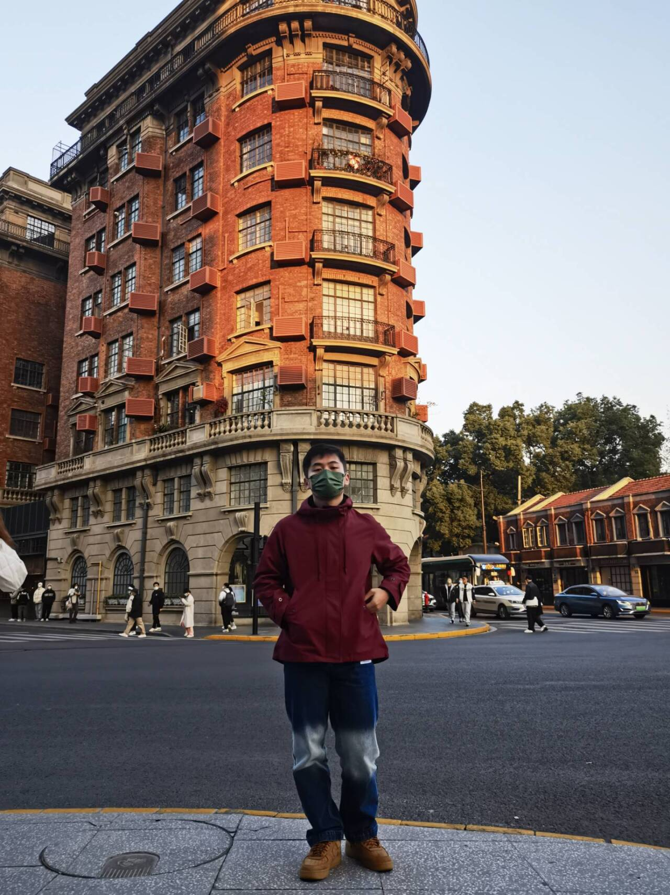
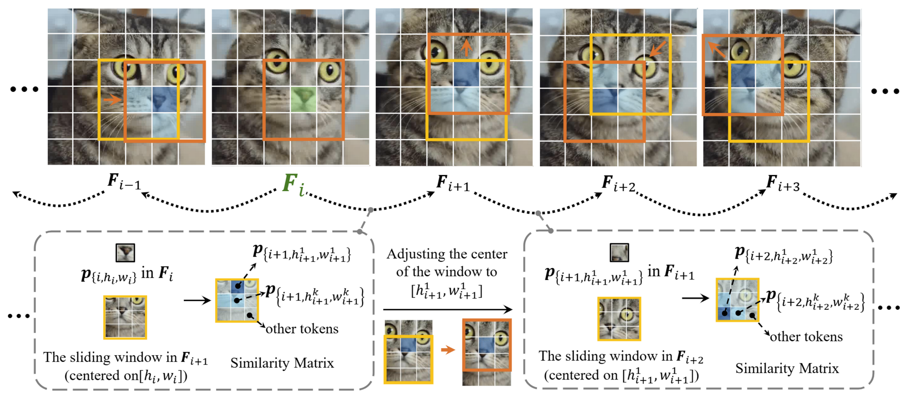
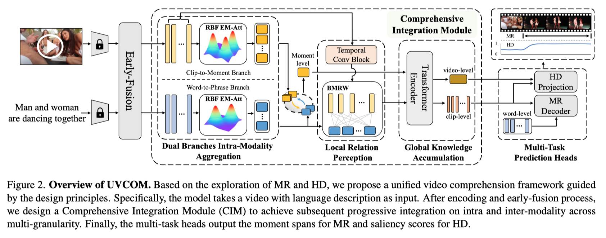

Wenqiao(Chopper) LiMaster Student
ShanghaiTech University
|
 |

Biography
I am a third year master student of EE at ShanghaiTech University, under the supervision of Prof. Yingna Wu and Prof. Shenghua Gao . I obtained my B.Eng in Automation at Central South University in 2021. I studied in the DMCVLab, supervised by Prof. Ranyi.
My research interests lie in the intersection of Computer Vision, Robotics, and Graphics. From 2022, I started to do some research on 3D Vision, Muiti-modality and Anomaly detection. Now, I focus on Embodied AI, especially imitation learning and robotics skill learning.
I'm looking for PhD position in 2025Fall and Intern position recently.
News
- [06/2024] One paper is submitted to Neurips 2024 !
- [06/2024] Attending CVPR 2024 at Seattle, Welcome to chat !
- [05/2024] I am serving as a Reviewer for ECCV 2024 !
- [02/2024] One paper is accepted by CVPR 2024 !
- [01/2024] I will Join DMCV Lab as research intern. Started doing research on Graphics !
- [11/2023] One paper is submitted to CVPR 2024 !
- [02/2023] I start to cooperate with Prof. Shenghua Gao closely in ShanghaiTech !
- [09/2022] I start to cooperate with Prof. Yingna Wu closely in ShanghaiTech !
- [05/2022] I end my work in BYD ltd as an Autonomous driving engineer !
- [07/2021] Joined the BYD ltd as an Autonomous driving engineer !
- [06/2021] Graduated from Central South University !
Industrial Experience
|
July. 2021 - May. 2022, BYD, Advanced Control Center, ShenZhen, China Topic: Autopilot and Chassis Control |
|
Education & Visiting
|
ShanghaiTech University, Shanghai Master Student in CASE Lab, ShanghaiTech Advisor: Prof. Yingna Wu Sep. 2022 - Now
|
ShanghaiTech University, Shanghai Visiting Student in SVIP Lab, ShanghaiTech Advisor: Prof. Shenghua Gao Jan. 2023 - June. 2024
|
|
Shanghai Jiaotong University, China Visiting Student in DMCVLab, SJTU Advisor: Prof.Ran Yi Jan. 2024 - May. 2024
|
|
|
Central South University, China Bachelor of Engineering in Automation Sep. 2017 - June. 2021
|
Selected Publications |
| /*Preprints*/ | |
|  |
MulSen-AD: A Dataset and Benchmark for Multi-Sensor Anomaly Detection Wenqiao Li*, Bozhong Zheng*, Jinye Gan, Fading Lu, Xiang Li, Xiaohao Xu, Ni Na, Zheng Tian, Shenghua Gao, Yingna Wu [paper] [code] [project page] |
| /*Conference*/ | |
|  |
: Towards Scalable 3D Anomaly Detection and Localization: A Benchmark via 3D Anomaly Synthesis and A Self-Supervised Learning Network Wenqiao Li, Xiaohao Xu, Yao Gu, Bozhong Zheng, Shenghua Gao, Yingna Wu Computer Vision and Pattern Recognition (CVPR), 2024[paper] [code] [project page] |
Honors & Awards
| [06/2024] Outstanding graduates student of Beijing. |
| [08/2023] First-Class Scholarship of Tsinghua University. |
| [12/2022] First-Class Scholarship of SIGS, Tsinghua University. |
| [03/2022] Tencent Rhino-Bird Research Elite Program, only 72 students in the world admitted to this program. |
| [09/2020] Scholarship for Academic Excellence of Taiyuan University of Technology. |
| [06/2019] Excellent Scientific Student of Taiyuan University of Technology. |
| [09/2019] Scholarship for Academic Excellence of Taiyuan University of Technology. |
| [09/2018] Excellent Academic Progress Student of Taiyuan University of Technology. |
| [06/2018] Scholarship for Academic Excellence of Taiyuan University of Technology. |
Professional Services
-
Student Reviewers:
European Conference on Computer Vision (ECCV)
Teaching
| 2022-2023 | Fall | Artificial Intelligence Technology (THU, 85990263-200) |